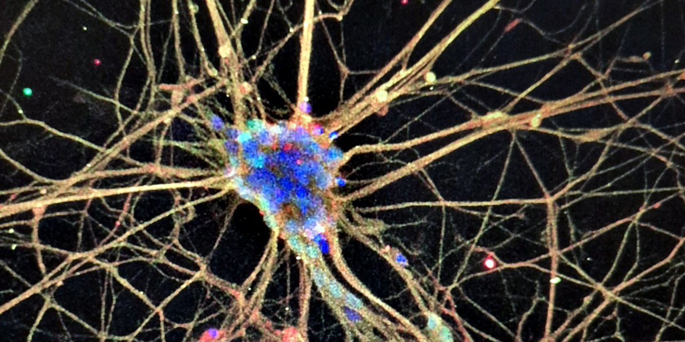

ALS and motor neuron disease
Why do motor neurons fail?
We use long-read sequencing of patient stem cell-derived motor neurons, including SOD1-ALS and TDP-43 models, to ask how disrupted splicing, polyadenylation and cryptic exons change the proteins vulnerable neurons make, and why ALS differs between men and women. We pair this with drug screens to search for compounds that selectively correct disease-associated isoforms.